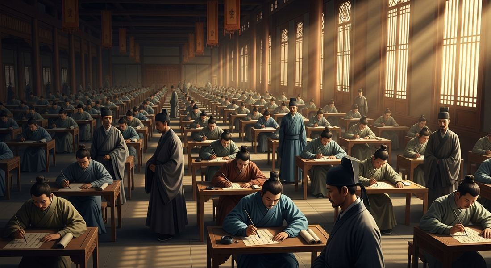
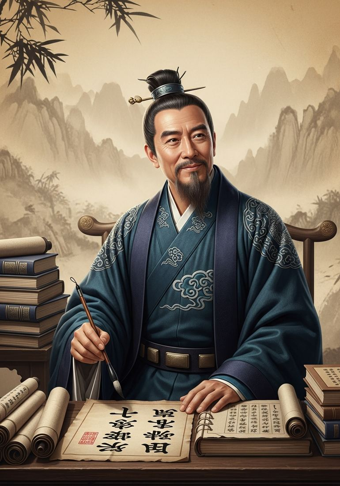

1.1 Developments in East Asia
- LO-A: Song political system — The Song (960–1279) selected officials via competitive civil service exams testing Confucian learning — not birth or military rank. This produced a literate professional bureaucracy (the gentry class) capable of governing 100 million people, but left the dynasty militarily weak, ultimately contributing to its fall to the Mongols in 1279.
- LO-B: Explain causes and effects of Song China's economic… — Agricultural and commercial revolution —: Champa rice (from Vietnam) ripened twice a year, doubling food production. This surplus supported population growth to ~100 million, urbanization, and commercialization. Paper money, the Grand Canal, and Indian Ocean trade networks made Song China the wealthiest economy in the world.
- LO-C: Explain how Neo-Confucianism shaped Chinese society — Neo-Confucianism's social effects —: Zhu Xi's synthesis became official state ideology, reinforcing patriarchal hierarchies. Elite women's lives became increasingly restricted; foot-binding spread as a physical expression of Neo-Confucian gender ideology — painful, disabling, and a marker of status.
- LO-D: Explain how Chinese innovations spread and influenced other… — Technology with global reach —: Printing, gunpowder, the compass, and paper money originated or matured in Song China. These technologies spread west via Mongol networks, eventually triggering the European military revolution, the Age of Exploration, and the Reformation — their most transformative effects occurring centuries later and thousands of miles away.
Try each question before revealing the answer.
1. The Song Dynasty's civil service exam required mastery of Confucian texts, not military skill. What was the most significant political consequence of this design?
2. Champa rice enabled double harvests in China. Using a chain of causation, explain how a single agricultural innovation could reshape an entire society's economy and social structure.
3. Neo-Confucianism is described as both conservative and innovative. What evidence supports each side?
4. Chinese innovations — printing, gunpowder, compass, paper money — were produced under the Song but had their most transformative global effects centuries later and thousands of miles away. What historical concept explains this pattern?
5. Neighboring rulers performed tribute rituals acknowledging Chinese cultural superiority. Why might a ruler genuinely powerful enough to resist accept this arrangement?
- Explain how Song Dynasty political systems were maintained and legitimized
- Explain causes and effects of Song China's economic expansion
- Explain how Neo-Confucianism shaped Chinese society
- Explain how Chinese innovations spread and influenced other regions
Tap a term for its definition.
-
Definition: Chinese dynasty ruling 960–1279 CE; split into Northern Song (960–1127, capital Kaifeng) and Southern Song (1127–1279, capital Hangzhou) after Jurchen invasion. Significance: Peak of pre-modern Chinese economic and technological development; the civil service system, commercial economy, and innovations of this era shaped East Asian history for centuries.
-
Definition: A competitive written examination testing mastery of Confucian texts, used to select government officials. Significance: Created a meritocratic (in theory) bureaucracy from the educated gentry rather than hereditary nobility; reinforced Confucian values throughout Chinese society and governance for nearly a thousand years.
-
Definition: A revival and synthesis of Confucian thought incorporating Buddhist metaphysics and Daoist cosmology; associated especially with Zhu Xi (1130–1200 CE). Significance: Became official ideology of the Song court and later dynasties; shaped education, gender roles, family structure, and political philosophy throughout East Asia for centuries.
-
Definition: A fast-ripening, drought-resistant rice strain from the Champa kingdom (present-day Vietnam), adopted in China during the Song period. Significance: Doubled rice yields by enabling two annual harvests; supported China's population growth to ~100 million and fueled commercialization of the economy.
-
Definition: A diplomatic framework in which neighboring rulers sent missions with gifts and performed rituals of deference to the Chinese emperor, in exchange for trade rights and recognition. Significance: Organized China's relationships with Korea, Japan, Vietnam, and Southeast Asian kingdoms; created a China-centered regional order without requiring direct conquest.
-
Definition: China's educated landowning class who staffed the civil bureaucracy; ranked below the imperial family but above merchants and farmers in Confucian hierarchy. Significance: Dominated Chinese political and cultural life for centuries; the exam system reinforced their dominance by requiring expensive years of Confucian education to compete successfully.
-
Definition: The world's first government-issued paper currency, introduced in Song China to facilitate large-scale commerce. Significance: Reflected the sophistication of Song financial systems; later adopted by the Mongol Yuan Dynasty and influenced global monetary practices. Made large transactions practical without heavy metal coinage.
-
Definition: The practice of tightly wrapping young girls' feet to restrict growth, producing small arched "lotus feet" considered beautiful among Song elites. Significance: Spread during the Song as a physical expression of Neo-Confucian gender ideology — restricting women's mobility and marking a family's status. Persisted until the early 20th century, affecting hundreds of millions of women.
The Song Dynasty: Governing One of the World's Largest States

Song-era examinations attracted thousands of candidates competing for a handful of positions. The exams tested mastery of the Confucian classics and literary composition. AI-generated illustration (Google Gemini, 2025), commercially licensed.
In 960 CE, a military commander named Zhao Kuangyin unified a fragmented China and founded the Song Dynasty. At its height, Song China was home to approximately 100 million people — the world's largest population — and governed through what was arguably the most sophisticated administrative system on earth.
The heart of that system was the civil service exam. To become a government official at any level, a man had to pass competitive written examinations testing his mastery of the Confucian classics — the Analects, the Book of Rites, the Book of History, and similar texts. The exams were brutally competitive: pass rates routinely fell below 5 percent, and candidates might spend decades studying and retaking examinations. Yet the system was theoretically open to any literate male Chinese subject, declaring in principle that governance was a matter of learning and virtue rather than birth.
In practice, the gentry — wealthy landowning families who could afford years of expensive tutoring — dominated the examinations. But the symbolic openness of the system was culturally powerful: it declared that the right to govern derived from Confucian learning, not hereditary privilege. Officials produced by this system staffed a massive, literate bureaucracy managing taxation, public works, law, and military logistics across an enormous empire. The exam also served an ideological function: officials trained on Confucian texts shared a common worldview centered on loyalty, hierarchy, and moral governance — making them reliable servants of the imperial system rather than agents of regional warlords.
The Agricultural and Commercial Revolution
Song China's economic expansion rested on a foundation of rice. During the Song period, farmers across south China widely adopted Champa rice, a fast-ripening strain imported from the Champa kingdom in present-day Vietnam. Champa rice matured in 60 days — less than half the time of existing varieties — and was drought-resistant enough to grow on hillsides and less-fertile land previously unsuitable for cultivation.
The effects cascaded through Chinese society:
- A farmer who had harvested one crop per year could now harvest two — doubling household income.
- Food surpluses fed a population that climbed toward 100 million — the world's largest at the time.
- Surplus labor flowed into cities, where workers specialized in manufacturing silk, porcelain, and paper goods for domestic and export markets.
- Wealthier, urbanized consumers demanded more goods, driving further commercial expansion.
The Song government supported commerce with infrastructure. The Grand Canal — expanded from its Sui Dynasty origins — linked the rice-producing Yangtze River Delta to the capital in the north, enabling enormous volumes of goods to flow via inland waterways. The Song issued the world's first government paper currency — jiaozi — enabling merchants to conduct large transactions without carting heavy metal coins. Credit instruments, letters of exchange, and proto-banking networks emerged to support long-distance trade. Chinese merchants exported silk, porcelain, and tea via Indian Ocean networks reaching Southeast Asia, South Asia, and the Persian Gulf.
Neo-Confucianism: Philosophy, Society, and Gender

Zhu Xi (1130–1200), whose philosophical synthesis became the official ideology of the Song court and later dynasties across East Asia. AI-generated illustration (Google Gemini, 2025), commercially licensed.
The Song period also produced a philosophical revolution. Neo-Confucianism, associated especially with the philosopher Zhu Xi (1130–1200), was both a revival of classical Confucian ethics and a creative synthesis incorporating Buddhist and Daoist ideas. Zhu Xi argued that all things — including human moral nature — are governed by an underlying cosmic principle (li), and that self-cultivation through study, reflection, and ritual practice aligns the individual with this universal order. The goal was a person of perfect virtue and social harmony.
Neo-Confucianism became the official curriculum for the civil service exams, shaping the worldview of every official who governed China for the next six centuries. It spread to Korea, Japan, and Vietnam, where it influenced governance, education, and family life across East Asia. In that sense, Neo-Confucianism was one of the most culturally influential intellectual movements of the pre-modern world.
At the core of Confucian ethics was filial piety (xiào) — deep reverence for parents and ancestors, considered the foundational virtue from which all other social bonds derived. The respect owed to a parent modeled the loyalty owed to a ruler; the care given to elders modeled the benevolence expected of officials. Ancestor veneration rituals were a practical daily expression of filial piety across East Asia. Buddhism also continued to shape the region alongside Confucianism. Mahayana Buddhism — dominant in China, Korea, Japan, and Vietnam — emphasized the bodhisattva ideal: an enlightened being who delays nirvana to help all sentient beings achieve salvation. In the Himalayan region and Mongolia, Tibetan Buddhism developed distinctive practices including a hierarchy of reincarnating lamas. In mainland Southeast Asia, Theravada Buddhism ("Way of the Elders") focused on individual monastic practice and the monastery as the center of community life. These Buddhist traditions coexisted with Confucian ethics — most educated East Asians drew on both.
But Neo-Confucianism also had a restrictive social face. Its emphasis on the five hierarchical relationships — especially the subordination of wife to husband, daughter to father — intensified patriarchal control over women's lives. The Song period saw a dramatic increase in the practice of foot-binding among elite families: the tightly wrapping of young girls' feet from age five or six to prevent normal growth. The resulting "lotus feet" — just three to four inches long — were considered beautiful and refined within the Neo-Confucian cultural framework, but required breaking the arch and several toes. Bound feet caused permanent disability and chronic pain, yet became a mark of status, femininity, and family honor. The practice eventually spread beyond the elite and persisted in China until the early 20th century.
Manufacturing and Export: Steel, Silk, and Porcelain
The Song commercial revolution was not only agricultural — it was industrial. Song China led the world in manufacturing output, and its goods circulated across Afro-Eurasia through Indian Ocean and overland Silk Road networks.
Iron and steel: By the early 11th century, ironworks in northern China were processing an estimated 125,000 tons of iron per year — more than all of medieval Europe combined. Iron equipped Song armies, supplied artisan workshops, and provided the tools that sustained agricultural productivity. Song metallurgists also mastered early steel production, creating harder and more durable implements than simple iron alone. This industrial-scale metalwork was a defining feature of Song economic power.
Textiles and ceramics for export: Chinese silk had traveled Eurasian trade routes for centuries; under the Song, silk and cotton textile production became major urban industries employing thousands of specialized workers. Song porcelain — thin, translucent, and precisely fired — was the most prized ceramic ware in the world, exported across the Indian Ocean to Southeast Asia, the Persian Gulf, East Africa, and the Middle East. The English word "china" for fine ceramic ware reflects this product's geographic origin. Together, textiles and ceramics drove Song export commerce and generated enormous merchant wealth.
Printing: Bi Sheng's movable-type printing (c. 1040) allowed mass production of books — Confucian classics, agricultural manuals, and government records. Printed books helped standardize Neo-Confucian thought and spread Chinese literary culture to Korea, Japan, and Vietnam, reinforcing the shared intellectual framework that bound East Asia together.
The Tribute System: Organizing East Asia's International Order
Song China's relationships with neighboring peoples were organized through the tribute system. Foreign rulers — from Korean kings to Japanese emperors to Southeast Asian monarchs — sent periodic missions to the Chinese imperial court bearing gifts and performing rituals acknowledging Chinese cultural superiority. The lead envoy performed the kowtow (ritual prostration) before the emperor. In return, the emperor recognized the foreign ruler's legitimacy, granted trade rights, and typically returned gifts of comparable or greater value.
The system served both parties. For the Chinese emperor, tribute missions were public theater demonstrating universal authority without military campaigns. For neighboring rulers, participation bought access to trade with the wealthiest economy in the region, formal diplomatic recognition that legitimized their rule at home, and sometimes Chinese protection. The ritual submission was theater; the real exchange was economic and political. This explains why states perfectly capable of resisting Chinese military pressure — like the Goryeo Dynasty of Korea or the various Vietnamese kingdoms — still participated regularly.
At the same time, the Song faced constant military pressure from the north. The Khitan people's Liao Dynasty controlled territory north of the Great Wall; the Song paid them annual tribute in silk and silver to maintain a fragile peace. After 1127, the Jurchen Jin Dynasty conquered northern China, forcing the Song court south to Hangzhou — beginning the Southern Song period. The dynasty survived in the south for another 150 years, prosperous but territorially diminished, until Kublai Khan's Mongol forces completed their conquest in 1279.
Nothing added yet. To attach a Google NotebookLM audio overview, video overview, or infographic to this topic: open this file — build/data/content/ap-world-history/1-1.json — and add an entry to notebookLmResources with a title and a shareable link (or paste an embed <iframe> directly into this block in the generated HTML file if you're editing the page by hand instead).
- To create loyal, educated officials who governed according to Confucian principles
- To ensure that government positions were equally distributed among all social classes
- To limit the military's influence over civilian governance
- To generate revenue for the imperial treasury through examination fees
- The expansion of China's tributary relationships with Southeast Asian states
- The spread of Buddhism throughout the Yangtze River Delta
- Population growth and increased commercialization of the Chinese economy
- Increased military conflicts with nomadic groups on the northern frontier
- The Song state successfully eliminated private merchant activity by nationalizing currency
- The commercialization of the Song economy produced financial innovations that increased the state's fiscal capacity
- Paper currency caused economic instability that weakened the Song government's ability to fund its military
- Song commercial innovations spread rapidly to other Eurasian civilizations through overland trade routes
- Neo-Confucian ideology reduced women's legal rights, eliminating protections that had existed under earlier Tang Dynasty law
- Neo-Confucianism's emphasis on female virtue led directly to the practice of foot-binding as a symbol of elite status
- Zhu Xi's personal views on gender were rejected by Song emperors, who preferred more egalitarian Daoist alternatives
- The state's promotion of Neo-Confucian texts through the civil service exam reinforced patriarchal social structures across all levels of society
- Technological innovation in warfare consistently determines the outcome of conflicts between sedentary and nomadic peoples
- The Song Dynasty's civilian-dominated government systematically under-invested in military technology, explaining its eventual defeat
- Military technology alone is insufficient to guarantee state survival when facing a strategically superior opponent with larger resources
- Gunpowder weapons were ineffective against cavalry armies until European improvements in the 15th century
Answer parts A, B, and C with direct, specific responses. Do not write an essay.
Part A
Briefly describe ONE specific way the civil service examination system served the Song Dynasty's political interests.
Part B
Briefly explain ONE cause of the Song Dynasty's military vulnerability to the Mongols.
Part C
Briefly explain ONE way Chinese innovations from the Song period influenced developments in another world region.
Write a full essay with thesis, contextualization, evidence, and historical reasoning. This prompt rewards a strong causal argument — pick one cause and defend it as most significant relative to others. Targeted historical reasoning skill: Causation.
📝 My Notes (edit this yourself — no AI needed)
This box is yours. Open this page's HTML file directly (in GitHub's editor or any text editor), find the <!-- MY-NOTES-START --> comment below, and type between the markers — corrections, extra context for this year's students, a link, anything. Changes show up as soon as you save and re-publish the file — nothing else on the page will change.
(Add your own notes, corrections, or extra context here.)